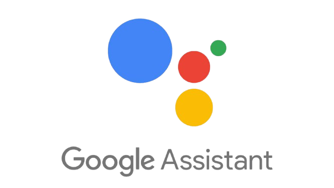

Beberapa aplikasi berbasis AI (Artificial Intelligence) yang digunakan oleh beberapa kalangan.
Asisten Virtual

Edukasi
Desain Grafis
Produktivitas

Konten & Teks
Asisten Virtual
Edukasi
Desain Grafis
Produktivitas
Konten & Teks
Dampak Positif Penggunaan AI bagi Pelajar
Penggunaan AI memberikan banyak manfaat bagi pelajar dalam proses belajar. AI dapat membantu mencari informasi dengan cepat sehingga siswa lebih mudah memahami materi pelajaran. Selain itu, AI juga dapat membantu menjelaskan konsep yang sulit dengan cara yang lebih sederhana, memberikan contoh soal, serta membantu mengerjakan tugas atau latihan. Dengan adanya AI, pelajar dapat belajar secara mandiri kapan saja tanpa harus selalu menunggu penjelasan dari guru. Teknologi ini juga dapat meningkatkan kreativitas, misalnya membantu membuat ide tulisan, presentasi, atau proyek sekolah.
Dampak Positif Penggunaan AI bagi Masyarakat Umum
Penggunaan AI memberikan banyak manfaat bagi masyarakat dalam berbagai bidang kehidupan. AI dapat membantu pekerjaan menjadi lebih cepat dan efisien, misalnya dalam bidang kesehatan, pendidikan, transportasi, dan bisnis. Teknologi ini juga memudahkan masyarakat dalam mencari informasi, berkomunikasi, serta menyelesaikan berbagai tugas sehari-hari. Selain itu, AI dapat membantu meningkatkan produktivitas kerja, membantu analisis data yang rumit, serta memberikan solusi atau rekomendasi yang lebih akurat dalam pengambilan keputusan.
Dampak Negatif Penggunaan Ai bagi Pelajar
Di sisi lain, penggunaan AI juga memiliki dampak negatif jika tidak digunakan dengan bijak. Pelajar bisa menjadi terlalu bergantung pada AI sehingga kurang berusaha berpikir sendiri atau memahami materi secara mendalam. Selain itu, ada kemungkinan siswa menggunakan AI untuk menyalin jawaban tugas tanpa benar-benar belajar. Hal ini dapat mengurangi kemampuan berpikir kritis, kreativitas asli, dan kejujuran dalam belajar. Jika digunakan secara berlebihan, AI juga dapat membuat pelajar menjadi kurang aktif mencari informasi dari buku atau sumber belajar lainnya.
Dampak Negatif Penggunaan AI bagi Masyarakat Umum
Penggunaan AI juga memiliki beberapa dampak negatif. Salah satunya adalah kemungkinan berkurangnya lapangan pekerjaan karena beberapa pekerjaan manusia digantikan oleh mesin atau sistem otomatis. Selain itu, ketergantungan yang berlebihan pada AI dapat membuat manusia menjadi kurang berpikir kritis dan kurang mandiri dalam menyelesaikan masalah. Ada juga risiko penyalahgunaan AI, seperti penyebaran informasi palsu, pelanggaran privasi data, atau penggunaan teknologi untuk tujuan yang tidak bertanggung jawab. Oleh karena itu, penggunaan AI perlu disertai dengan kesadaran dan pengawasan agar manfaatnya dapat dirasakan tanpa menimbulkan dampak buruk.